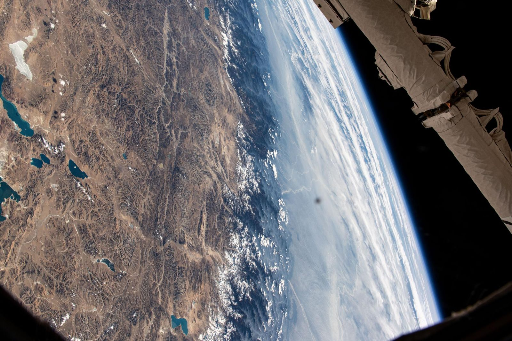

Part 2: Minerals, Rocks and Plates · Chapter 7 of 15
Plates
The Earth's outer shell is a jigsaw of moving pieces.

The lithosphere is broken into seven or eight major plates and many smaller ones. They fit together like a cracked eggshell and move relative to each other at a few centimetres a year. Almost all earthquakes, volcanoes and mountain building happen along their edges. This idea, plate tectonics, became the unifying theory of geology in the 1960s.
Three kinds of boundary
Divergent boundaries, where plates pull apart. Most are mid-ocean ridges, a chain of underwater volcanic mountains that runs for about 65,000 km around the globe. Magma rises into the gap and freezes into new oceanic crust.
Convergent boundaries, where plates move towards each other. If one plate carries dense oceanic crust, it sinks beneath the other in a process called subduction, forming a deep ocean trench. As the sinking plate heats up, water released from it helps melt the mantle above, feeding chains of volcanoes such as the Andes and Japan. If both plates carry continents, neither sinks easily, and the crust crumples into great mountain ranges.
Transform boundaries, where plates slide past each other sideways, as along the San Andreas Fault in California. Crust is neither made nor destroyed there, but the grinding motion causes frequent earthquakes.
The Himalayas are the result of a continent-to-continent collision. The plate carrying India has been pushing into Asia for about 50 million years. It is still moving north at a few centimetres a year, and the mountains are still rising, though erosion wears them down almost as fast.
Key terms
- plate
- One of the rigid pieces that the earth’s shell is broken into. The plates fit together like a crazy jigsaw.
- magma
- Molten rock churned up from the mantle, below the surface.
- mid-ocean ridge
- A long underwater mountain chain where two plates pull apart and new ocean crust forms.
- ocean trench
- A deep, narrow valley in the ocean floor where one plate is forced down into the mantle.
- subduction
- The sinking of one plate beneath another, back down into the hot mantle.
- continental crust
- The thick, light crust that forms the continents.
- oceanic crust
- The thin, dense crust that forms the ocean floors.
- Himalayas
- The mountain chain formed where the plate carrying India pressed against the plate carrying Asia.
Check your understanding
Think of your answer, then open each question to compare.
What happens at a mid-ocean ridge?
Plates pull apart, magma rises into the gap, and new oceanic crust forms.
Why does oceanic crust sink at subduction zones?
It is denser than continental crust, so it is the plate that goes down.
Why are the Himalayas still rising?
The Indian plate is still pushing into Asia.